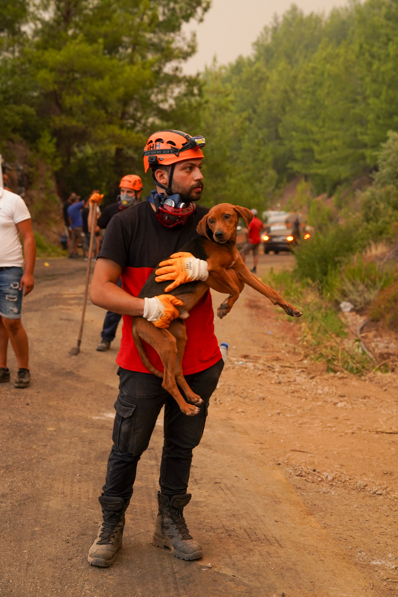
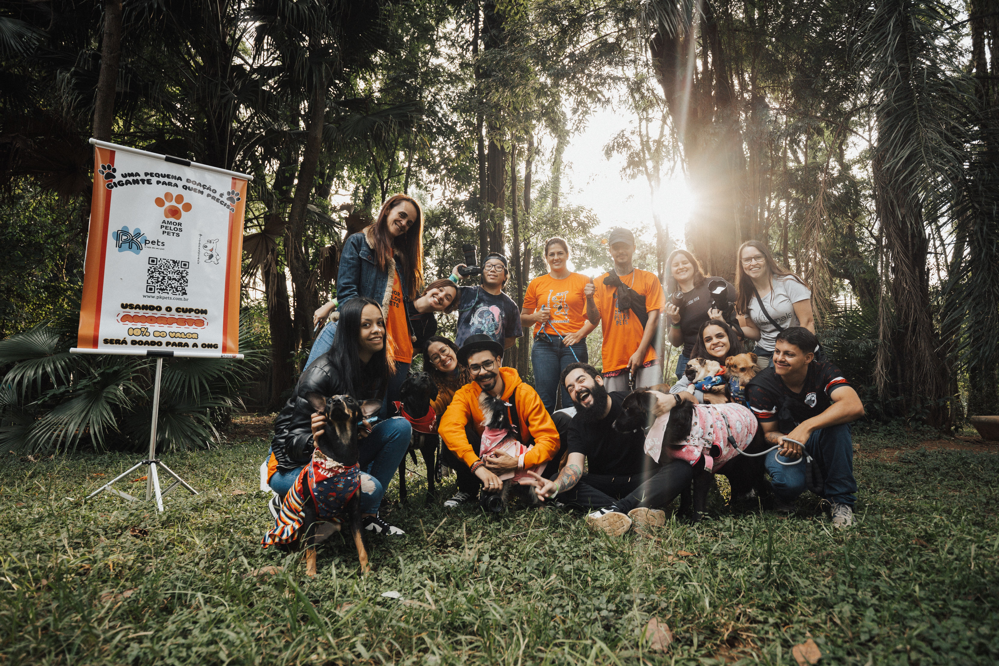
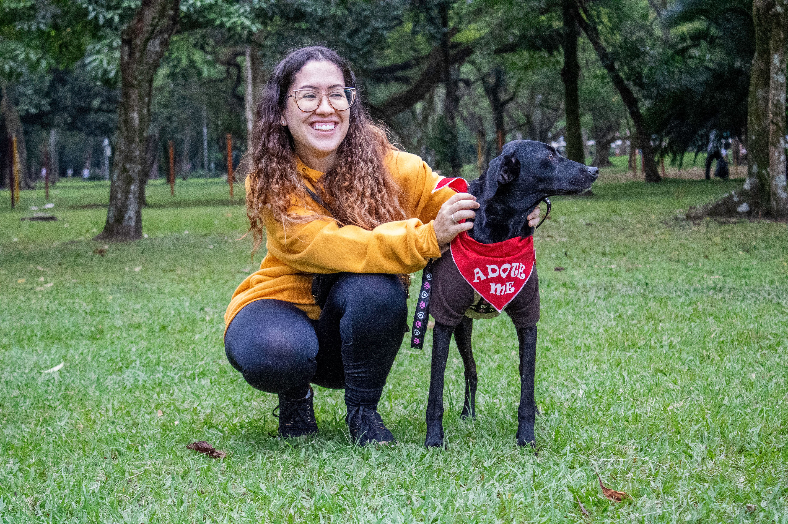

Resgate de Cães
Nosso projeto de resgate visa salvar cães em situação de abandono e vulnerabilidade. Trabalhamos com equipes dedicadas e veterinários parceiros para garantir assistência e abrigo digno.
Conheça as principais iniciativas e ações que desenvolvemos diariamente para resgatar, recuperar e transformar a vida dos cães abandonados.

Nosso projeto de resgate visa salvar cães em situação de abandono e vulnerabilidade. Trabalhamos com equipes dedicadas e veterinários parceiros para garantir assistência e abrigo digno.

Promovemos feiras e campanhas de adoção responsável, conectando cães resgatados e recuperados com famílias amorosas, promovendo novas histórias de carinho e proteção.

Processo cuidadoso de triagem, entrevistas e visitas com orientação responsável para garantir que cada adoção seja um sucesso para o cão e para toda a família.